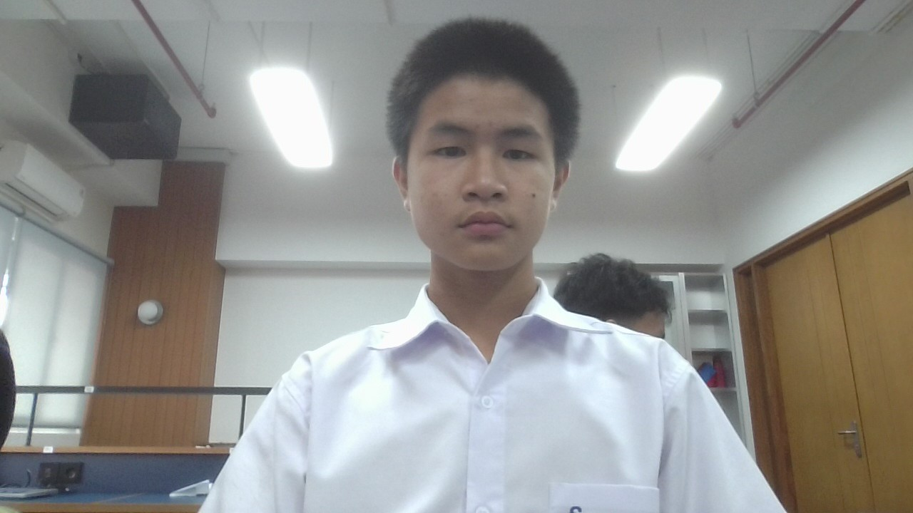

Maximillian Eugene Febrianto
Student
Achievements:
1. 2nd place National Wingchun Competition 2022
2. 3rd place National Wingchun Competition 2023
3. Apres Non Akademik 2022 Cum Laude
4. Apres Akademik 2023 Cum Laude
5. Apres Non Akademik 2023 Cum Laude
6. Apres Non Akademik 2024 Cum Laude
7. 1st place SanMar Cup futsal 2023
8. 1st place triboon minisoccer tournament cup 2022
9. 1st place triboon minisoccer tournament cup 2023
10. 1st place National Wingchun Competition 2024
11. 3rd place Canisius College Cup XXXIX minisoccer